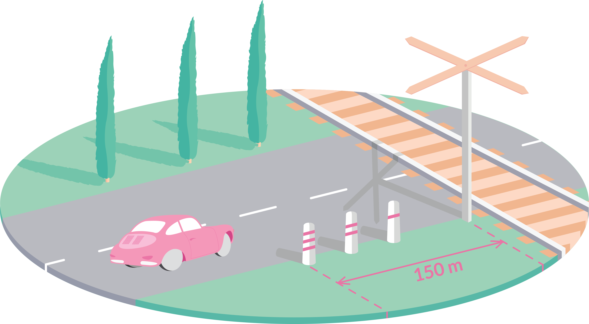

Cateva reguli de retinut privind trecerea la nivel cu calea fearata

Am numarat 18 intrebari legate de subiectul 'trecere la nivel cu calea ferata' printre intrebarile de la categoria B. Iata cateva idei extrase din intrebari si raspunsuri:
- panourile de semnalizare sunt instalate la 150m, 100m si 50m de calea ferata
- la mai putin de 50m de calea ferata este interzisa intoarcerea si oprirea voluntara a autovehiculului.
- este interzisa depasirea unei coloane oprite la trecerea la nivel cu calea farata
- daca barierele sunt ridicate sutenti obligat sa reduceti viteza si sa va asigurati dar nu trebuie sa opriti. Se considera greseala la examen si riscati sa fiti depunctat
- semnalele luminoase de culoare alba cu cadenta lenta functioneaza doar cand semnalele de culoare rosie sunt stinse
- sunteti obligat sa va conformati semnalelor agentilor cailor ferate. Un caz mai particular: sunteti obligati sa opriti la semnalul executat cu un fanion rosu de catre agentii amplasati la trecerea la nivel cu o cale ferata industriala
- neresepectarea indicatorului oprire instalat la trecerea la nivel cu calea ferata se pedepseste cu puncte de penalizare
Intrebarile si raspunsurile corecte le gasiti in lista autoquiz.net:
-
<<<<<<< HEAD
- Cand este permisa trecerea la nivel cu o cale ferata fara bariere, prevazuta cu semnalizare luminoasa, daca tocmai a trecut un tren?
- In care dintre urmatoarele situatii sunteti obligat sa circulati cu viteza redusa?
- Semnalul luminos intermitent de culoare alba, avand cadenta lenta, functioneaza:
- Este interzisa oprirea voluntara:
- Ce obligatii aveti la semnalele agentilor cailor ferate, plasati la trecerea la nivel cu o cale ferata?
- In care dintre situatii sunteti obligat sa reduceti viteza?
- Intoarcerea unui autovehicul este interzisa:
- Se aplica puncte de penalizare pentru:
- In care dintre situatiile prezentate mai jos nu este permisa oprirea voluntara a vehiculelor?
- Autoturismul rosu poate depasi in situatia data?
- Oprirea voluntara a vehiculelor este interzisa:
- In ce situatii este interzisa depasirea unei biciclete?
- Punctele de penalizare se aplica pentru:
- La ce distanta de trecerea la nivel cu calea ferata sunt instalate panourile suplimentare de avertizare?
- Cum trebuie sa procedeze conducatorul unui autovehicul la trecerea la nivel cu calea ferata, atunci cand barierele sunt ridicate?
- Daca la trecerea la nivel cu calea ferata constatati ca un vehicul este imobilizat pe calea ferata, cum veti proceda?
- Semnalul agentilor cailor ferate, executat cu un fanion rosu, aflati la trecerea la nivel cu o cale ferata industriala din orase, va obliga:
- Ce obligatii aveti la trecerea la nivel cu calea ferata curenta prevazuta cu bariere, daca acestea sunt ridicate?
Ultimele postari:
- <<<<<<< HEAD ======= nr.1 Pentru care dintre faptele de mai jos se aplica masura retinerii permisului de conducere?
- nr.2 Pentru care dintre faptele de mai jos se aplica masura retinerii permisului de conducere?
- 18 categorii de permis auto
- >>>>>>> a5a3dde76b6693713fe9dd002c0efe9c5c6dac63 Cateva reguli de retinut privind trecerea la nivel cu calea fearata
- Bine ati venit